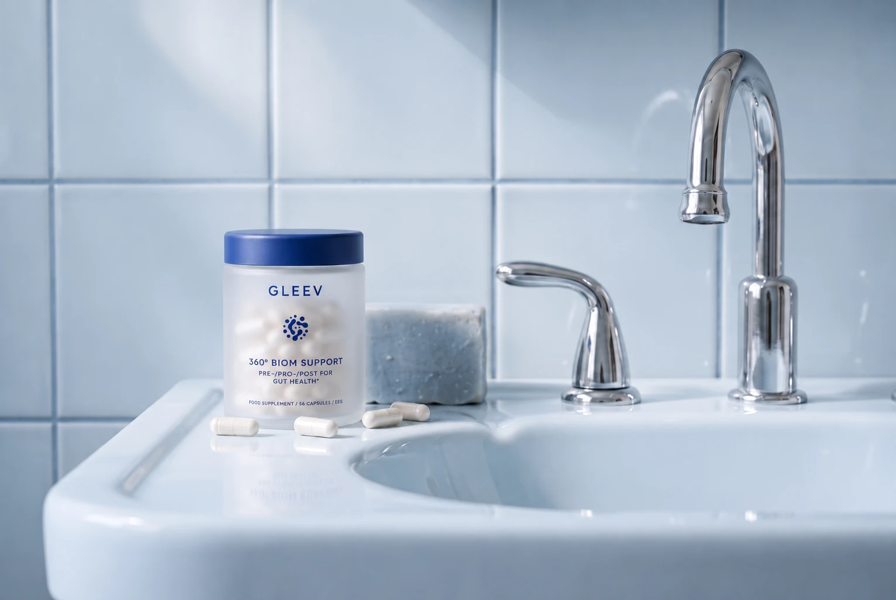

20 billionMOVEMENT · COMFORT
L. reuteri LR-G100Chosen for how your gut moves and how it feels. Relevant to bowel movement frequency and abdominal comfort.
Strain family studied in 8 RCTs, 1,087 patients (Li 2024).Two capsules a day. 70 billion live cultures across eight named strains, a clinically studied postbiotic and a prebiotic, in a delayed-release capsule built to get past your stomach. Developed by a scientist.
.

The 3pm meeting. The belt let out by dinner. Mornings you cannot plan. In an international survey of more than 73,000 adults across 33 countries, conducted online in most of them, more than 40% met the criteria for at least one functional gut problem. It is common. It is not normal. And it is rarely fixed by a capsule that opens in the wrong place.
Gleev was developed by Tim Verhaeghe, who leads medical and regulatory at Gleev, as a four-part system rather than a single ingredient. Every strain and ingredient was chosen for what the research on it shows.

A fasted stomach is about as acidic as battery acid. Most capsules open there. Gleev's delayed-release capsule stayed intact for over an hour in acid of that strength, in laboratory testing, so its contents are carried further down before release.

Most gut supplements stop at two.
Two capsules a day, with water, at the same time each day. No fridge. One pack a month.
Month one is arrival. Months two and three are where it becomes a foundation.

Eight named strains with their codes and amounts. A postbiotic with its deposit numbers. A prebiotic. Vitamin B2. A plant-based delayed-release capsule. Every batch tested. We print every strain and every amount. Ask your probiotic to do the same.
Chosen for how your gut moves and how it feels. Relevant to bowel movement frequency and abdominal comfort.
Strain family studied in 8 RCTs, 1,087 patients (Li 2024).
Chosen for bloating, wind and stool form, including hard or lumpy stools.
Strain family studied for bloating, flatulence, stool form and frequency (Compare 2015; Cook 2025).
Resilience when your gut is knocked sideways. One of the most studied probiotic strains in the world.
Meta-analyses in acute gastroenteritis and antibiotic-associated diarrhoea (Szajewska 2015, 2019).
The bifidobacterium that eats the fibre we feed it. Relevant to the colon, comfort and bowel function.
Species studied in IBS for pain, bloating and permeability; in chronic constipation for stool consistency (Bonfrate 2020; Srivastava 2024).
A named Bifidobacterium strain at a printed amount, broadening the formula across both families.
Species studied for improved bowel regularity and in IBS for reduced abdominal pain, bloating and improved bowel habits (Eskesen 2015; Martoni 2020).
A named Bifidobacterium strain at a printed amount, broadening the formula across both families.
Species studied in IBS, with clinical research reporting relief from abdominal pain, bloating and urgency, alongside improved digestive comfort and quality of life (Guglielmetti 2011; Andresen 2020).
A named Lactobacillus strain at a printed amount, broadening the formula across both families.
Species studied in IBS, with clinical research demonstrating improvements in abdominal pain, bloating and overall digestive comfort (Ducrotté 2012).
A named Lactobacillus strain at a printed amount, broadening the formula across both families.
Species studied in IBS, with clinical research reporting reductions in abdominal pain and bloating, alongside improvements in bowel habits and digestive comfort (Martoni 2020).A defined, heat-treated preparation of L. fermentum CNCM I-2998 and L. delbrueckii CNCM I-4831 with their fermentation matrix. Works whether or not anything survives the journey.
Sold as a licensed medicine in French pharmacies for decades.Five double-blind placebo-controlled paediatric trials in acute diarrhoea; a 137-adult randomised trial in chronic diarrhoea; a 325-patient study on antibiotic-associated diarrhoea; a 297-patient IBS-D study and a randomised crossover trial.
Salazar-Lindo 2007; Xiao 2003; Tarrerias 2011; Halpern 1996.Mechanism work shows adhesion to intestinal cells, inhibition of pathogen adhesion, protection of tight junctions and a bifidogenic effect.
Warda 2021. Research on the postbiotic preparation.A fibre that resists digestion and reaches the colon, where it is selectively used by bifidobacteria, including the three in this capsule.
Gibson 2017; Nagy 2023.In formulation studies inulin improved the viability and stress tolerance of lactobacilli, including LGG, under simulated gut stress and in storage. The fibre looks after the cultures before they get to work.
Padilha 2013; Savedboworn 2017; Oliveira 2011.Vitamin B2 contributes to the maintenance of normal mucous membranes.
Authorised claim.A clear vegetarian capsule of gellan gum and pectin, specified to resist disintegration for more than 30 minutes.
Acid-resistance test reports show the capsule intact for over 60 minutes in 0.1M hydrochloric acid, about pH 1, the acid strength of a fasted stomach.
A laboratory test on the capsule. Not a human outcome.Contents are carried past the stomach and released further down, where the cultures, fibre and postbiotic are meant to work.
Every batch tested for microbial contaminants and heavy metals (not more than 10ppm).
No GM material. Not irradiated. 56 capsules, 28 days, two a day.
Two capsules with your first glass of water. That is the whole routine.
Two capsules with my first glass of water and I barely think about it now. By week four my afternoons felt noticeably calmer.
Maya R. · Verified buyerEvery strain and every amount is printed. I had tried three other probiotics that told me almost nothing. This is refreshingly clear.
Daniel K. · Verified buyerI travel a lot, so not needing a fridge matters. It lives in my bag and I never forget it.
Priya S. · Verified buyerI didn't notice much in the first two weeks, then things settled by week five. Glad I kept going.
Tom H. · Verified buyerIt works out cheaper than monthly and I like that I can skip a delivery when I'm away.
Hannah L. · Verified buyerSome supplements upset me. These have been fine from day one, and the capsule is easy to swallow.
Chris B. · Verified buyerTwo capsules, same time each day, that's it. The packaging is lovely too.
Sofia M. · Verified buyerI like knowing there's a prebiotic and a postbiotic in the same capsule. It feels like someone actually thought it through.
Oliver J. · Verified buyerRenews on the plan's cycle. Skip, pause or cancel in two clicks.
.
Anything missing? Write to us and we will answer it here.
The ingredients, strains and capsule are. The two lead strain families have published human research on bloating, stool form and bowel movement; LGG is one of the most studied probiotic strains in the world; the postbiotic has randomised, placebo-controlled trials and has been sold as a medicine in French pharmacies for decades; the capsule has been tested in stomach-strength acid.
Because 70 billion cultures, 170mg of postbiotic and 100mg of fibre do not fit in one. Two with your first glass of water is the whole routine.
Month one is arrival. Months two and three are where it becomes a foundation. Nothing dramatic in the first fortnight is normal. If something is wrong, speak to a doctor.
Skip, pause or cancel in two clicks from your account. Your next shipment date is always shown.
Yes. Vegan, no allergens, no GM material, not irradiated.
No. Two-year shelf life at room temperature.
Speak to a pharmacist or doctor before combining Gleev with medicines or other supplements.
We ship to the UK and the EU.